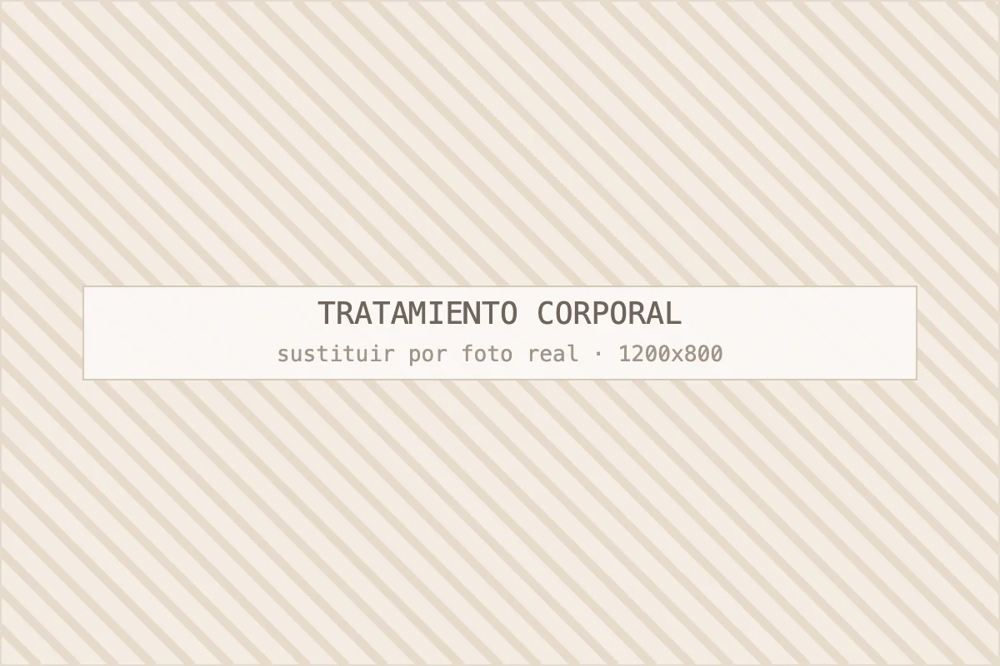

Maderoterapia
La base manual de casi todos nuestros protocolos reductores.
Ver maderoterapiaCorporal
Protocolos combinados que suman maderoterapia, presoterapia, drenaje linfático y aparatología según lo que pida tu tejido. Entre 40 € y 75 € por sesión.

Un protocolo corporal completo incluye valoración inicial con mediciones, entre 8 y 12 sesiones de cabina combinando técnicas, y una pauta sencilla para casa. No es una sesión suelta: es un plan con calendario y objetivo escrito.
Las piezas que combinamos son cinco: maderoterapia para movilizar, presoterapia para drenar, drenaje linfático manual cuando hay mucha retención, radiofrecuencia cuando el problema es firmeza y vendas frías o activas para cerrar. La mezcla exacta sale del tejido que tengas, no de un menú fijo.
Todo empieza igual: una consulta de veinte minutos donde miramos, medimos y te decimos qué se puede conseguir y en cuánto tiempo. Puedes reservarla en la página de contacto y cita.
Resumen rápido: si te sobra volumen y notas el tejido duro, necesitas reductor; si has perdido peso y la piel ha quedado floja, necesitas reafirmante. Hacer el reductor cuando el problema es flacidez empeora la sensación de piel vacía.
| Criterio | Protocolo reductor | Protocolo reafirmante |
|---|---|---|
| Problema que resuelve | Volumen localizado, celulitis, retención | Piel flácida tras adelgazar o embarazo |
| Técnicas base | Maderoterapia + presoterapia | Radiofrecuencia + activos tensores |
| Precio orientativo | 40–60 €/sesión | 55–75 €/sesión |
| Sesiones | 10–12 | 8–10 |
| Cuándo se ve | Sesión 5–7 | Sesión 4–6 |
En bastantes casos hay las dos cosas a la vez y lo que hacemos es empezar reduciendo y cerrar el ciclo reafirmando. Es la secuencia que mejor funciona después de una pérdida de peso importante.
Trabajamos abdomen y flancos, cara interna y externa del muslo, glúteo, brazos, espalda y piernas completas por retención. Cada zona tiene su técnica dominante.
Abdomen bajo y flancos responden a maderoterapia intensa con drenaje. La cara interna del muslo es la zona más delicada y la que más morados da, así que ahí bajamos presión y subimos número de sesiones. El glúteo mejora combinando reafirmante con trabajo manual. Y las piernas hinchadas al final del día son, casi siempre, un problema de drenaje más que de grasa: se resuelven antes con presoterapia y drenaje linfático manual.
Entre 40 € y 75 € por sesión en nuestro centro, según cuántas zonas se traten y cuántas técnicas se combinen; los bonos de 10 sesiones bajan el precio por sesión entre un 15 % y un 25 %.
Para que te hagas una idea real: un protocolo de abdomen y flancos con maderoterapia y presoterapia sale alrededor de 45 € por sesión en bono de 10. Un protocolo de piernas completas más glúteo con reafirmante se acerca a los 70 €. El desglose completo está en tarifas orientativas y se cierra en la valoración.
Con un ciclo de 10 sesiones bien hecho, lo habitual es una reducción de 2 a 5 centímetros en la zona tratada y una mejora clara del aspecto de la piel. Quien parte de más retención baja más; quien ya está delgada nota sobre todo firmeza y textura.
Lo que no vamos a prometer: no eliminamos la celulitis para siempre, no sustituimos una cirugía y no garantizamos una talla menos. Por experiencia, el factor que más diferencia hay entre dos clientas con el mismo tejido no es el protocolo, es la constancia: venir dos veces por semana las tres primeras semanas cambia el resultado por completo.
No vendemos sesiones sueltas de aparatología a quien viene con un objetivo de contorno. Una sesión aislada de cualquier técnica corporal no cambia nada; lo que cambia el tejido es un ciclo sostenido con la técnica correcta y una pauta en casa.
Preguntas frecuentes
Lo que nos preguntan en consulta sobre este tratamiento. Si te queda alguna duda, escríbenos por WhatsApp al 692 601 791.
Lo habitual son 10 sesiones, ampliables a 12 si la celulitis es antigua o hay mucha retención. Después conviene una sesión de mantenimiento al mes para conservar el resultado. En la valoración te damos el número concreto por escrito, con calendario, para que sepas de antemano el compromiso de tiempo y de dinero.
Sí, y de hecho es lo más frecuente: abdomen y flancos es la petición número uno. Tratar una sola zona abarata la sesión y permite trabajarla con más tiempo. Lo que no recomendamos es cambiar de zona cada semana: el tejido necesita repetición para responder.
La mejoran de forma visible, no la eliminan de forma definitiva. Se puede reducir mucho la retención, la dureza y el aspecto de piel de naranja, y ese cambio es el que se ve en el espejo. Mantenerlo depende de una sesión mensual y de la alimentación; sin eso, el tejido vuelve poco a poco a su estado anterior.
No exigimos dieta, pero sí pedimos tres cosas: beber agua, moderar la sal y moverte algo cada día. Con eso el resultado mejora de forma medible. Si tu objetivo incluye perder peso, lo lógico es combinar el tratamiento con un profesional de la nutrición; nosotras no hacemos pautas dietéticas porque no es nuestro campo.
Sí, pasada la cuarentena y con el alta de tu ginecólogo, y si hubo cesárea esperamos a que la cicatriz esté completamente cerrada. En lactancia evitamos activos que se absorban y trabajamos sobre todo con técnica manual y drenaje. Es uno de los momentos en los que el drenaje da mejor sensación de alivio.
Continúa por aquí
Casi ningún objetivo se resuelve con una sola técnica. Estas son las combinaciones que más sentido tienen junto a los tratamientos corporales.
La base manual de casi todos nuestros protocolos reductores.
Ver maderoterapiaPara piernas cansadas, retención y postoperatorio estético.
Ver masajesMuchas clientas combinan corporal con un facial de mantenimiento.
Ver facialesPedir cita
Cuéntanos qué te preocupa y te decimos con franqueza qué tratamiento tiene sentido en tu caso, cuántas sesiones necesitarías y cuánto costaría. Si creemos que no vas a notar resultados, te lo diremos.
Última actualización: · Contenido revisado por Jeisy, responsable de Centro Estética Barcelona.